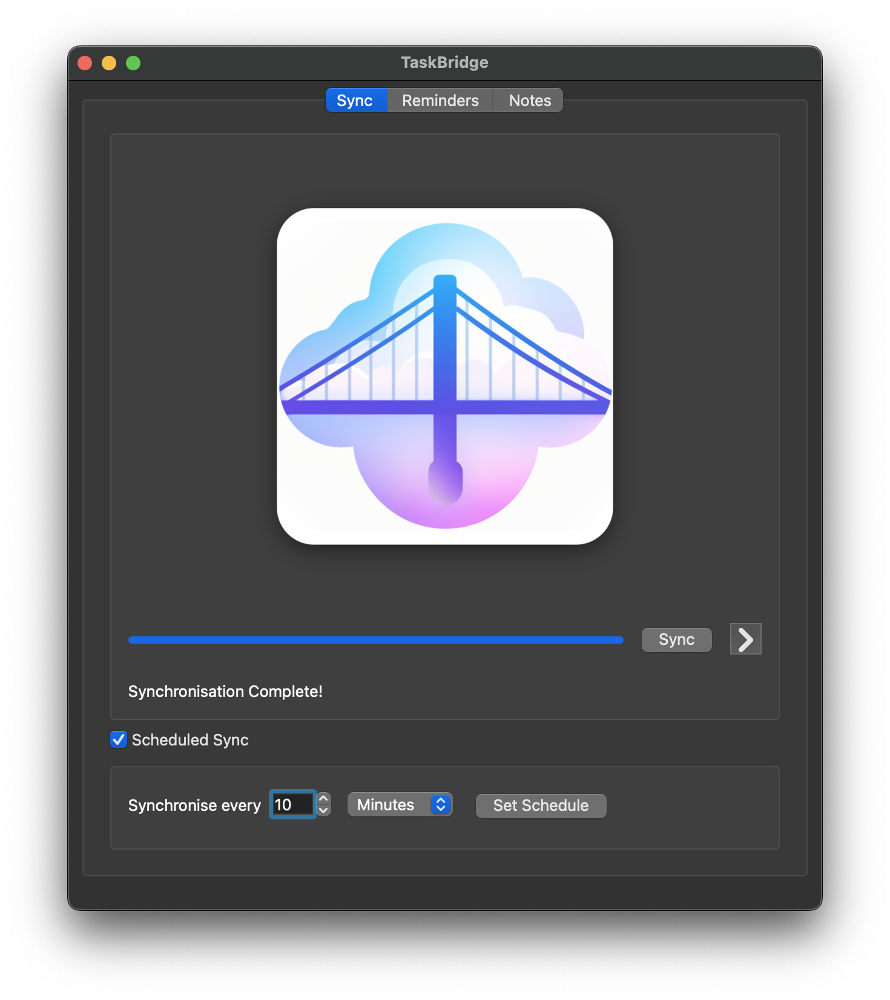
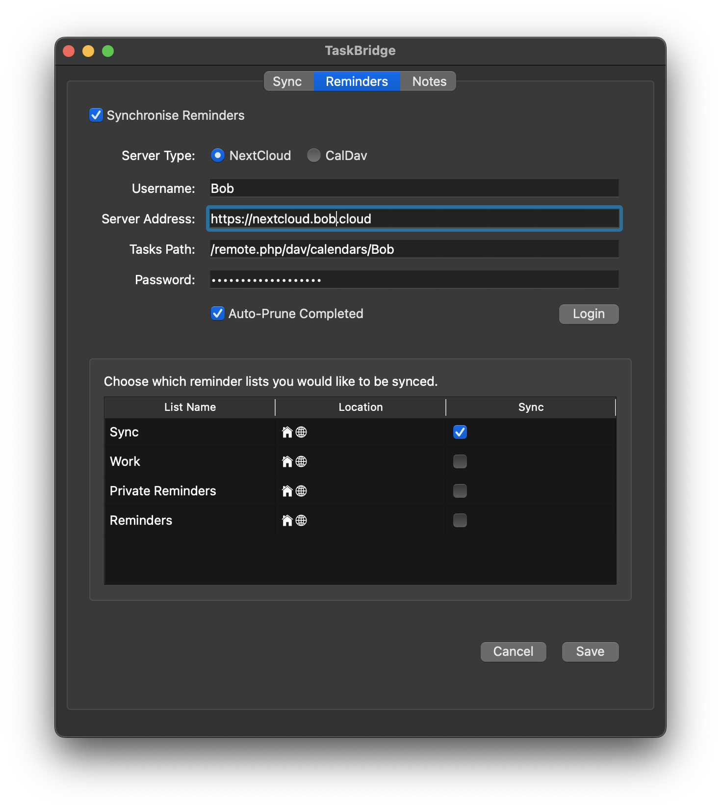
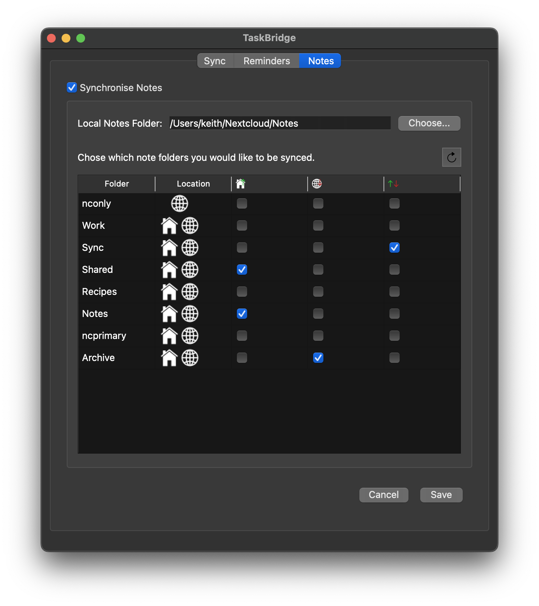
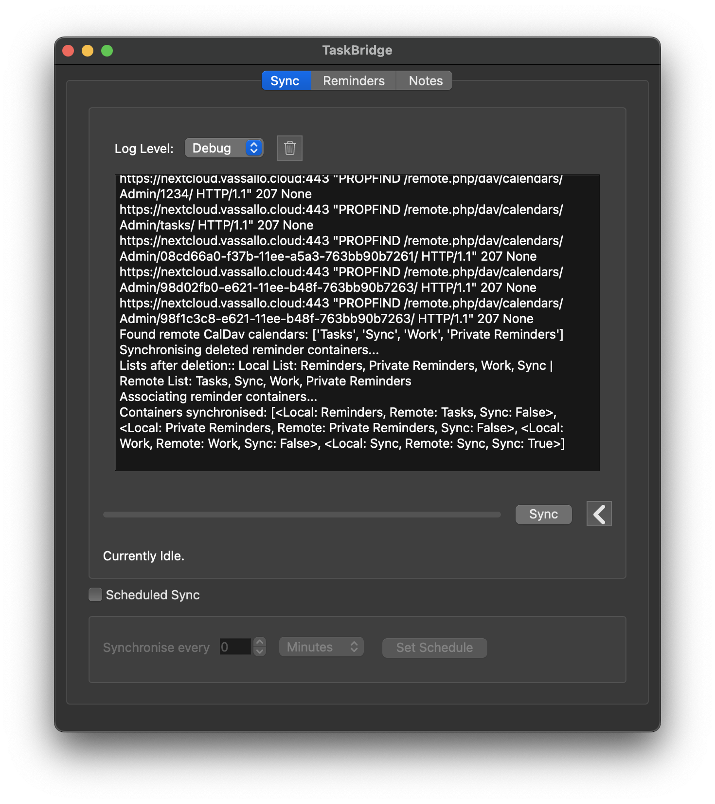

Carry out a one time sync, or use AutoSync to keep your notes and reminders up-to-date.

Choose which reminders to sync - either with NextCloud or CalDav. Oh, and prune completed reminders too.

Powerful control over note sync. Sync bidirectionally, local to remote, or remote to local.

Love to look under the hood? TaskBridge is 100% open-source, well documented and looking for contributors!
